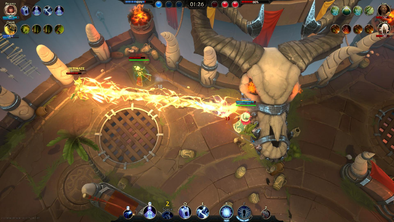
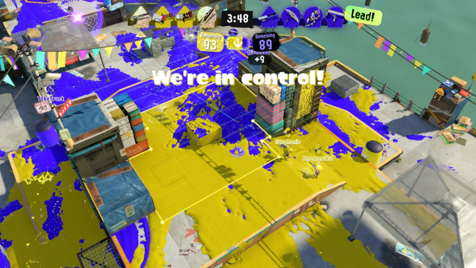
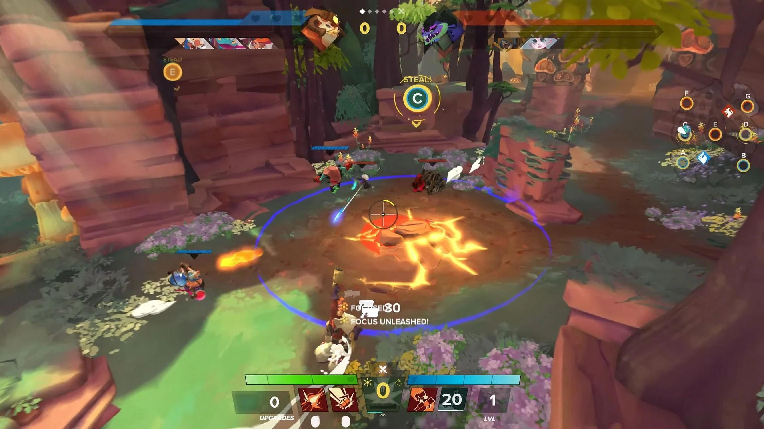
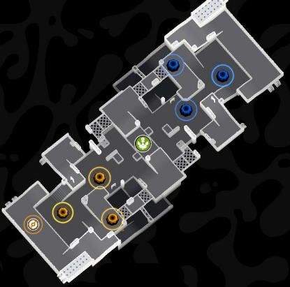
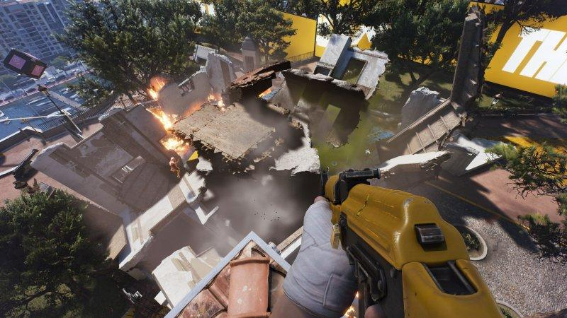
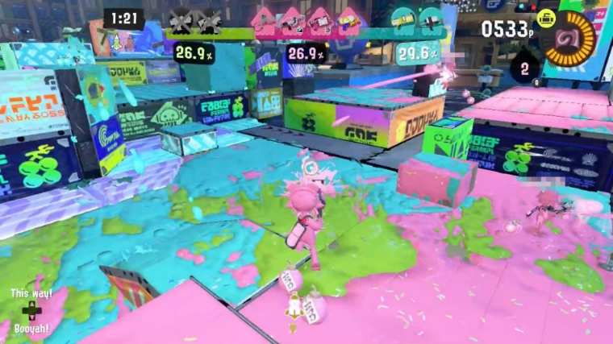
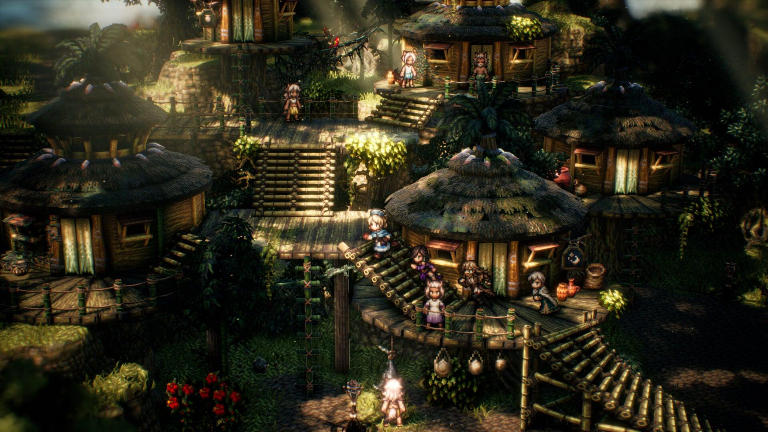

完整实机演示
从角色选择、团队交战到区域争夺的完整实机运行记录。
猫狗碰撞
游戏策划案
从连击驱动占点、区域争夺到角色定位、地图结构与多人协作， 完整记录核心玩法、系统边界和 Demo 验证方向。
下载 DOCX 原稿一、项目概述与设计目标
1.1 游戏基本信息
| 项目 | 当前设定 |
|---|---|
| 游戏名称 | 《猫狗碰撞》 |
| 游戏类型 | 多人联机 / 动作 / 大乱斗 / 团队区域争夺 |
| 核心体验 | 轻松易上手的动作对抗、团队配合、连击制造与动态占点 |
| 核心玩法标签 | 大乱斗 + 连击数 + 占点 + 场景互动 |
| 对战结构 | 双方阵营围绕多个中立区域争夺控制权；建议采用五局三胜系列赛 |
| 美术方向 | 2D 像素角色 + 3D 风格化渲染场景，角色与环境保持统一的色彩和辨识度 |
| 技术方向 | Unity3D、C#、Shader Graph、Terrain、Photon Fusion |
| 地图主题 | 森林、沙滩/海滩、沙漠、火山、雪地 |
1.2 游戏概念
《猫狗碰撞》是一款强调轻松氛围与团队协作的多人动作竞技游戏。玩家选择具有不同战术定位的猫狗英雄，在具有高低差、掩体、通道、资源点和可互动设施的战场中争夺区域。
与传统占点玩法主要依赖区域内人数优势不同，本作将动作战斗中的连击表现纳入占领计算：玩家通过攻击、技能衔接、控制与队友配合积累连击贡献，再将战斗优势转化为区域占领进度。战斗不只是击败对手，也是在为团队创造占点窗口。
1.3 核心设计目标
| 目标 | 设计方向 | 验证重点 |
|---|---|---|
| 低门槛参与 | 移动、普通攻击、互动和基础技能易于理解；不以极限反应速度作为唯一门槛。 | 新玩家能否快速理解目标并参与团队行动。 |
| 高配合收益 | 不同职业提供开路、突袭、强占、治疗与复活等互补能力。 | 组队协作是否明显优于无组织的单人冲锋。 |
| 战斗影响占点 | 连击数成为占领贡献的重要来源，让进攻行为转化为战术收益。 | 连击能否改变区域归属，同时避免单人滚雪球。 |
| 战场动态变化 | 可破坏掩体、建设设施、载具、地形效果与补给刷新改变路线。 | 同一地图是否能产生不同战术选择。 |
| 轻松而有竞技性 | 猫狗主题、夸张动作和趣味场景降低对抗压力，清晰胜负规则保留竞技目标。 | 玩家是否愿意持续对局并尝试不同英雄。 |
1.4 设计原则
- 目标优先：玩家始终能判断当前最值得争夺的区域，以及团队下一步该做什么。
- 战斗服务占点：击飞、硬直、连击和控制都应创造占点机会，而不是只追求伤害数字。
- 职业互补而非职业锁定：角色有明确强项，但任何角色都应具备基本的自保和参与占点能力。
- 地图提供选择而非随机惩罚：地形复杂度应带来路线差异，不应造成无解的出生压制。
- 信息可读：占领进度、连击状态、危险区域、队友状态与互动反馈必须清楚。
二、核心玩法与单局循环
2.1 核心对局目标
双方阵营在限时战场中争夺多个中立区域。玩家可以通过击退敌方、制造连击、占据区域、建立防御设施或利用载具转移兵力来争取优势。对局重点不是单纯击杀数，而是如何在有限时间内将战斗优势转化为更多区域控制权。
2.2 建议的对局结构
| 阶段 | 玩家行为 | 系统反馈 |
|---|---|---|
| 赛前准备 | 选择阵营与英雄，查看地图区域分布和职业构成。 | 展示双方阵容、地图简图、区域规则与开局倒计时。 |
| 开局部署 | 从己方出生点出发，分配人员前往不同区域。 | 中立区域开放争夺；补给与战术道具按地图规则刷新。 |
| 交战争夺 | 通过普通攻击、技能、连击和场景互动争夺区域。 | 区域占领值实时变化；区域归属与争夺状态同步显示。 |
| 中盘转线 | 根据区域局势调动人员，使用载具、捷径或设施支援其他战线。 | 地图状态变化促使队伍调整战术，不鼓励全员长期抱团。 |
| 终局冲刺 | 围绕高价值区域进行集中争夺或分兵偷点。 | 倒计时、区域收益和连击状态强化终局决策。 |
| 结算 | 依据区域控制结果判定本局胜负。 | 展示胜负、占领贡献、连击贡献、支援贡献等数据。 |
2.3 五局三胜系列赛
项目简介提出“五局三胜定天下”。建议将其定义为一场系列赛最多进行五个独立小局，先赢得三局的阵营获得系列赛胜利。每一小局使用一张战场地图或同一地图的不同区域配置。
- 每小局独立计时、独立结算，上一局的区域占领结果不直接带入下一局。
- 系列赛中可轮换地图主题或战场布局，避免双方长期使用同一套路线。
- 是否允许局间更换英雄、调整战术道具配置，建议在赛前规则中明确；Demo 阶段可先提供局间自由更换。
2.4 玩家核心循环
- 观察地图与队友位置，判断当前需要争夺、支援或防守的区域。
- 选择路径接近目标，利用地形、草丛、载具与可破坏设施改变接敌方式。
- 通过普通攻击和技能压制敌方，制造连击并争取区域内的战斗主动权。
- 在队友掩护下进入区域，将连击贡献与人数优势转化为占领进度。
- 占领后布置防御、补充资源或转移到下一处目标，形成持续的团队推进。
2.5 战场信息层级
- 第一层：系列赛比分、当前小局剩余时间、区域归属与占领进度。
- 第二层：队友位置/状态、连击数、角色技能状态、关键道具与载具位置。
- 第三层：可互动设施提示、地形状态、补给刷新提示及局内战斗统计。
三、基础操作与角色控制（3C）
3.1 基础操作构成
| 操作类别 | 建议内容 | 设计目的 |
|---|---|---|
| 移动 | 方向移动、跑动/加速（如采用）、转向。 | 保持移动易懂，支持快速转点。 |
| 地形移动 | 游泳、潜水、翻滚；部分角色可穿越特殊地形。 | 让水域、草丛和复杂地形形成路线差异。 |
| 战斗 | 普通攻击、两项小技能、一项绝招、反制/脱身手段。 | 建立基础连招与职业特色。 |
| 互动 | 与队友互动、拾取道具、破坏场景、搭乘载具、使用设施。 | 让战场环境成为战术系统的一部分。 |
| 隐蔽 | 草丛躲藏、潜水或利用掩体遮蔽。 | 支持侦察、埋伏与偷点。 |
3.2 控制与镜头原则
- 镜头应优先保证角色、周边敌人和占领区域处于可读范围；多人混战时避免频繁剧烈缩放。
- 角色移动响应应稳定，翻滚和技能位移要有明确起止反馈，避免输入被动画长时间锁死。
- 复杂地形中的移动速度变化要有清晰提示，避免玩家误以为角色操作失灵。
- 交互对象应有明确的距离、朝向或按键提示；同一位置存在多个对象时应提供优先级规则。

3.3 角色差异化 3C
角色差异化不只体现在技能数值，还应体现在移动手感、攻击距离、转向速度、受击反馈、互动效率和地形适应性。斥候强调机动，工程强调开路与设施操作，连击型角色强调持续战斗与区域压制，支援强调救援和团队容错。
3.4 受击与控制状态
建议建立统一的受击状态框架，包括轻硬直、重硬直、击飞、击退、减速、眩晕/控制免疫等。不同技能可调用不同等级的控制效果，避免所有攻击都造成长时间无法行动。控制效果应有递减或抗性窗口，防止多人连续控制形成无解连锁。
四、战斗系统与连击机制
4.1 战斗定位
战斗是争夺区域的手段，也是产生连击贡献的主要来源。攻击设计应兼顾命中反馈、技能衔接和团队协作，不鼓励玩家脱离目标区域无限追击残血敌人。
4.2 普通攻击与技能构成
- 普通攻击：提供稳定的基础输出与连击起点，可通过多段攻击、蓄力或攻击节奏形成角色差异。
- 小技能一：突出职业主要功能，例如开路、突进、范围控制或治疗。
- 小技能二：提供连招派生、反制、位移或场景互动能力。
- 绝招：需要明确的充能/使用条件，在关键争夺中改变战场态势，但不应直接决定整局胜负。
4.3 连击数定义
连击数用于记录玩家或团队在连续有效战斗行为中的表现。建议将“个人连击”作为操作反馈，将“团队连击贡献”作为区域占领计算的一部分。有效行为可包括连续命中、技能衔接、打断敌方、协助队友命中、控制区域内敌人等。
| 行为 | 是否建议计入 | 设计说明 |
|---|---|---|
| 连续有效命中 | 计入 | 构成连击基础；同一目标重复命中需设置合理间隔或衰减。 |
| 技能命中/连招派生 | 计入 | 鼓励玩家使用角色技能完成衔接。 |
| 打断敌方关键动作 | 计入 | 让控制与反制行为也能产生团队价值。 |
| 队友协同命中 | 计入团队贡献 | 避免只奖励最后一击，鼓励集火与配合。 |
| 攻击无效目标/友方 | 不计入 | 防止刷连击与恶意利用。 |
| 对同一目标无间隔重复触发 | 限制计入 | 通过触发间隔、目标权重或收益递减控制刷取。 |
4.4 连击维持与断连
建议采用“短时间窗口 + 连续有效行为刷新”的连击维持方式。玩家在连击窗口内继续完成有效动作即可维持连击；超过窗口未产生有效行为则连击结束。被击倒、长时间受控或主动脱离战斗可触发额外衰减。
- 连击窗口建议作为可调参数，不在本版固定秒数。
- 连击数达到阶段阈值时，可显示阶段徽记或特效，增强成就感。
- 团队连击可由多名队友共同贡献，但需要区分个人贡献与团队贡献，便于结算和反作弊。
4.5 连击收益递减
连击应当越高越有价值，但不能让先手优势无限放大。建议采用分段收益或递减倍率：低连击阶段快速给予正反馈，中高连击阶段逐步降低单位连击带来的额外占领收益。
| 连击阶段（示意） | 占领贡献系数（示意） | 设计目的 |
|---|---|---|
| 起势段 | 1.00 | 让新手也能通过基础攻击产生贡献。 |
| 连段段 | 1.25 | 奖励持续命中与基础技能衔接。 |
| 高热段 | 1.45 | 奖励熟练操作与团队配合。 |
| 极限段 | 1.60（封顶） | 提供高光表现，但控制滚雪球上限。 |
以上倍率仅为原型测试起点，不是最终数值。正式调参时应同时观察占领速度、平均连击长度、角色选择率和落后方翻盘率。

4.6 连击与受击博弈
- 攻击方通过连续命中积累连击，防守方可通过打断、击退、控制或迫使对方离开区域来破坏其连击节奏。
- 被控制不应直接清空所有收益，可根据控制等级扣减连击或暂停连击窗口。
- 高连击角色需要承担一定的站位风险，避免远距离无风险积累占领贡献。
五、区域占领与胜负结算
5.1 战场区域结构
地图由多个可争夺区域（POI）构成。原始方案提出“5+2”结构：五个未占领区域，以及双方各一个出生点。五个区域承担不同战术功能，双方出生点提供安全部署与返场路径。
5.2 区域功能类型
| 区域类型 | 特点 | 战术价值 |
|---|---|---|
| 中央枢纽 | 道路四通八达、资源丰富、掩体相对较少。 | 易于快速占领，但防守压力大，适合争夺与转线。 |
| 阻塞交汇点 | 至少一个区域承担敌我主要动线交汇或通道阻塞功能。 | 决定兵力通过效率，适合工程设施与团队防守。 |
| 复杂地形区 | 高低差、坑洼、狭窄路径或特殊地表较多。 | 创造伏击、绕后与斥候穿越机会，改变战斗节奏。 |
| 近己方区域 | 靠近出生点，掩体较多、地势较高，易守难攻。 | 提供稳定后方与防守空间，但不应形成无法突破的龟缩点。 |
| 资源/交通区 | 补给、载具或互动设施较丰富。 | 提供额外战术选择，成为双方争夺的次级目标。 |
5.3 占领状态
建议每个区域具有独立占领值与归属状态。区域可处于中立、争夺中、猫方控制、狗方控制四种状态。占领值达到阈值后改变归属；敌方进入区域并产生有效争夺时，占领进度可暂停、减速或反向变化。
5.4 占领贡献模型
占领进度由区域内人数优势、连击贡献和区域状态共同决定。为避免人数优势被完全取消，人数仍然提供基础压制；连击则作为放大团队战斗表现的额外贡献。建议采用可解释、可调试的模型：
区域每秒占领变化 = 基础占领速率 × 人数优势系数 × 连击贡献系数 × 区域状态系数
| 变量 | 建议定义 | 约束方向 |
|---|---|---|
| 人数优势系数 | 根据双方在区域内的有效人数差计算。 | 人数越多越有优势，但采用封顶或递减收益。 |
| 连击贡献系数 | 根据区域内己方有效连击贡献换算。 | 高连击提高占领效率，设置上限并随连击断开衰减。 |
| 区域状态系数 | 根据区域是否中立、己方控制或敌方控制调整。 | 中立区域正常推进；敌方控制区域需要先压制或反转。 |
| 基础占领速率 | 由地图与模式配置决定。 | 确保单个区域不会在极短时间内被瞬间完成占领。 |
建议先采用简单可视化的占领条与贡献分解：玩家能看出当前占领主要来自人数优势还是连击优势。模型不应成为玩家需要计算的复杂公式，而应通过界面反馈让玩家理解行为结果。
5.5 多人占点与反制规则
- 区域内双方人数相同或接近时进入僵持状态，避免占领值无故快速变化。
- 敌方进入区域可降低己方占领效率；敌方完成有效攻击或控制时可进一步破坏占领节奏。
- 区域内无人时，建议占领进度停止；是否缓慢回退可作为模式参数。
- 同一玩家的连击贡献应有时间衰减，避免离开战场后仍长期为占点提供倍率。
- 占领成功后提供短暂的状态提示，并允许防守方通过反攻重新争夺。
5.6 胜负判定
建议小局结束时按区域控制结果判定胜负：优先比较己方控制区域数量；若区域数量相同，则比较各区域累计控制时间或总占领值；仍相同则进入短时加赛，或以预先确定的次级指标结算。具体平局规则需在 Demo 阶段确定。
系列赛先取得三小局胜利的一方获胜。击杀数、个人连击数和支援数作为表现统计，不建议直接取代区域控制成为主胜负条件。
六、角色定位与英雄设计
6.1 四类角色定位
| 定位 | 核心职责 | 团队价值 | 弱点/约束 |
|---|---|---|---|
| 工程（控制/重坦） | 开路、制造前线空间、建造/拆除防御设施。 | 改变地形与道路，稳定前线，承受压力。 | 机动性较弱，转点效率较低。 |
| 斥候（突袭） | 快速游击、制造伤害、穿越复杂地形、侦察与偷点。 | 抢占空区、骚扰后排、快速支援。 | 正面持续作战能力与承伤能力较弱。 |
| 连击（赖场/强占） | 持续制造多段连击、控制区域、稳定战线。 | 在争夺区内形成高压存在，掌握战斗节奏。 | 需要贴近战场，容易被集火或针对。 |
| 支援（治疗/救援） | 恢复队友状态、减少硬直影响、救援倒地队友、布置复活点。 | 提高团队容错，维持阵线持续作战。 | 单独进攻能力有限，依赖队友保护。 |
6.2 工程英雄示例：热锤 / 重锤
设计目标：以“越打越快”的热槽机制建立重型前线角色。持续攻击提升攻击速度、技能速度与旋转攻击节奏；达到热槽上限后进入解放状态，强化技能表现。工程职责还包括开荒与设施建造/拆除。
| 能力 | 建议设计方向 |
|---|---|
| 被动：热槽 | 攻击与技能命中积累热槽；热槽越高，攻击速度和部分动作速度越快。达到上限后进入短暂解放状态。 |
| 普通攻击 | 多段重锤连击，末段具备明显击飞或重硬直，用于打断敌方占点动作。 |
| 技能一：旋转冲击 | 普通状态下可操控旋转攻击；解放状态每圈附带地面冲击，形成范围压制。 |
| 技能二：铁山靠 | 短距离冲撞，命中造成硬直；可作为击飞后的连招衔接。 |
| 绝招：过载旋风 | 短时间进行多段范围攻击，最后一击造成强力击退或区域清场效果。 |
| 战术互动 | 使用工程工具开辟道路、建造临时掩体或拆除敌方设施。 |
6.3 斥候英雄示例：泡泡锤
设计目标：远程骚扰与高速游击结合，利用泡泡弹道、后坐力和多段派生形成灵活输出。
| 能力 | 建议设计方向 |
|---|---|
| 被动：弹性后坐 | 远程攻击产生可控后坐力，熟练玩家可利用后坐力调整站位或跨越小型地形障碍。 |
| 普通攻击 | 挥动泡泡球进行远程攻击，攻击节奏中第三次攻击可发射双球。 |
| 技能一：蓄力泡泡 | 可边移动边蓄力，释放时向目标方向发射多枚泡泡；蓄力越久数量越多，建议设置上限。 |
| 技能二：泡泡钻击 | 分段技能：短暂蓄力后发射高速泡泡造成硬直并标记目标；再次释放突进钻击，最后可向输入方向跳离。 |
| 绝招：泡泡弹幕 | 参考大范围持续射击的体验，形成远程压制区域；具体弹幕形态与范围需原型确认。 |
| 战术互动 | 利用机动能力快速抵达区域、穿越水域减速带或从侧翼骚扰敌方。 |
6.4 连击型英雄示例：盾斧电锯锤
原始资料将该角色定位为“多段连击制造者”，特点是较笨重、需要站定或持续贴近目标，但能在区域内制造大量连击。以下为补全方向，属于建议方案。
| 能力 | 建议设计方向 |
|---|---|
| 被动：连锁运转 | 连续命中积累转速/连击能量；中断攻击后逐渐下降。高转速提升多段攻击效率，但移动能力受到限制。 |
| 普通攻击 | 盾斧近身挥击，攻击段数较多；完整连段最后一击造成范围击退。 |
| 技能一：锯刃架势 | 短时间架起电锯持续攻击，适合在狭窄区域封锁入口；期间转向较慢。 |
| 技能二：盾面推进 | 举盾缓慢推进，降低正面受击影响并挤压敌方站位；可与队友攻击形成连击窗口。 |
| 绝招：全功率切割 | 在指定方向形成持续多段切割区域，压制敌方并快速积累区域战斗贡献。 |
| 战术定位 | 强守强占、控制入口、持续制造连击；需要队友协助处理侧翼与远程威胁。 |
6.5 支援英雄示例：支援狗
设计目标：容易上手、生命与容错能力较高，擅长救援队友、减少硬直影响并建立团队返场点。
| 能力 | 建议设计方向 |
|---|---|
| 被动：可靠伙伴 | 靠近队友时获得辅助效率加成；救援队友后短暂提高双方抗硬直能力。 |
| 普通攻击 | 中近距离攻击，伤害适中，主要用于自保与打断。 |
| 技能一：快速救援 | 对倒地/失能队友进行快速拉起；救援过程可被打断，但支援角色具备一定抗干扰能力。 |
| 技能二：守护光环 | 在范围内降低友方受到硬直或控制的影响，帮助队伍稳住区域。 |
| 绝招：重生据点 | 在合法区域布置临时复活/集结点，队友可从此处快速返回战场；应设置持续时间与使用限制。 |
| 战术定位 | 维持阵线、救援与复活支援，不以高爆发输出作为主要价值。 |
6.6 角色平衡原则
- 每个定位都应具备至少一种争夺区域的有效手段，不允许某职业只能在队友身后等待。
- 强控制、治疗、复活、建造和高连击收益均应有冷却、范围、次数或资源限制。
- 技能数值需要同时考虑伤害、硬直、位移、连击贡献和占点收益，不能只按伤害平衡。
- 角色的差异化优先通过机制与手感实现，避免单纯以更高生命/伤害区分职业。

有明确的团队目标、区域争夺和角色技能配合，适合参考团队在目标附近的站位
七、战术道具、载具与场景互动
7.1 战术道具定位
地图中的补给箱可刷新战术道具，用于放大角色定位并改变战场节奏。道具应提供短时战术机会，而非替代角色本身的核心技能。
| 定位 | 道具方向 | 用途 |
|---|---|---|
| 工程 | 开荒器 / 设施布置器 | 清理障碍、开辟道路、建造或拆卸防御设施。 |
| 斥候 | 加速装置 / 隐身装置 | 快速转点、绕后或短时潜行。 |
| 连击 | 防护罩 / 震荡器 | 稳固站位、打断敌方连击或制造区域空间。 |
| 支援 | 复活装置 / 重生点布置器 | 救援队友、建立短时集结位置。 |
7.2 补给刷新规则（建议）
- 补给点应分布在双方都能争夺的位置，避免只刷新在某一阵营安全区。
- 强力道具可采用固定刷新点与周期刷新结合，确保玩家能学习地图节奏。
- 同一玩家携带道具数量建议有限，拾取新道具时需替换、丢弃或交给队友。
- 道具拾取与使用均需有明显图标、音效和世界反馈。
7.3 可破坏与可建造场景
场景互动是本作区别于普通竞技场的重要组成。掩体、路障、木门、简易桥梁或防御设施可被攻击、破坏或建造。工程角色在相关互动中拥有更高效率。
- 可破坏物件应区分完全破坏、阶段损坏和可修复三种类型。
- 可建造设施应有建造时间、生命值、占地范围和数量上限。
- 设施不应完全封死关键通路；地图至少保留一条可绕行路线。
- 设施建造/拆除状态应被双方看见，减少不可预期的路线变化。
7.4 载具与交通玩法
简历描述中明确提出飙车占点与渡轮偷家。建议载具承担快速转点、跨越地形和制造奇袭的作用，而不是成为持续压制步行玩家的强力武器。
| 载具/交通 | 玩法用途 | 限制建议 |
|---|---|---|
| 小型车辆 | 快速运送一至数名队员，冲击外围区域或进行转线。 | 转向与刹车需要手感清晰；碰撞伤害有限，避免直接碾压决定胜负。 |
| 渡轮/水上运输 | 连接被水域分隔的两岸，提供偷袭或快速增援路线。 | 设置出发/抵达节奏，双方可争夺码头或阻断航线。 |
| 特殊地形通道 | 滑索、弹跳装置、矿车或临时通路等地图专属交通。 | 作为地图特色使用，不应所有地图都堆叠同类设施。 |
7.5 动态陷阱与环境互动
- 陷阱可由地图机关触发，也可由玩家布置；触发后产生减速、击退、短暂控制或路线封锁。
- 陷阱应有可识别的预警、触发范围与反制方式，避免隐形秒杀。
- 环境效果包括草丛隐蔽、水域减速、流沙漩涡、火山喷发区域、冰面滑行等。
- 同一时间不宜叠加过多环境控制效果，避免角色失去操作权。

八、地图与关卡设计
8.1 通用地图结构：5+2
每张标准地图建议采用五个未占领区域与两个阵营出生点的结构。五个区域至少包含一个敌我主要动线交汇的阻塞点，其余区域承担中央枢纽、复杂地形、资源补给和近出生点防守等功能。
8.2 POI 布局原则
- 中央地区：四通八达、资源丰富、掩体相对较少，易于占领但难以长期防守。
- 偏中央地区：地势复杂、坑洼或路线交错，容易产生伏击和临时战术变化。
- 靠近出生点地区：掩体较多、地势较高，易守难攻；需要至少一条绕后或攻坚路径。
- 阻塞点：必须存在可替代路线或可被工程改变的通行方式，防止单点封锁导致整局停滞。
8.3 地图主题方向
| 主题 | 核心环境机制 | 玩法机会 |
|---|---|---|
| 森林 | 草丛隐蔽、树木掩体、林间小路、可破坏木栅栏。 | 斥候埋伏、侧翼绕行、工程开路。 |
| 沙滩/海滩 | 浅水减速、潮汐区域、码头与渡轮。 | 水陆转线、渡轮偷家、争夺交通枢纽。 |
| 沙漠 | 流沙、沙丘高低差、遗迹通道、稀疏掩体。 | 利用高低差观察、流沙限制追击、争夺补给点。 |
| 火山 | 周期性喷发、熔岩危险区、岩石掩体。 | 预判环境节奏、逼迫敌方离开安全区域。 |
| 雪地 | 冰面滑行、雪堆掩体、冰洞或雪道。 | 利用惯性位移、设置滑行路线与伏击点。 |
8.4 地形与动线设计
- 通过 Terrain 建立高低差与地形轮廓，关键区域周边避免过度遮挡视线。
- 主要通路应形成清晰的主干线与若干侧路，方便玩家快速理解地图。
- 每个区域至少提供两种接近方式；重要据点应有攻坚路线与撤退路线。
- 高处优势应通过视野、路线或设施体现，不应直接提供无法反制的伤害加成。
- 草丛、浅水、流沙等效果要有视觉提示与进入/离开反馈。

8.5 地图动态事件
建议每张地图配置少量特色动态事件，例如森林落木短暂阻断道路、沙漠流沙改变通行效率、火山喷发迫使区域转移、雪地冰面破裂形成新通道。动态事件应服务于转线与战术选择，不应随机夺走玩家已经取得的区域控制权。
九、联机与团队协作体验
9.1 联机体验目标
- 多人同屏战斗中保持角色、技能、占领状态和互动结果的一致性。
- 关键战斗反馈应及时，避免命中、受击、救援或占点出现明显延迟感。
- 网络异常时应提供明确提示；断线重连与中途加入规则可在后续版本完善。
9.2 团队协作行为
| 协作行为 | 产生价值 | 反馈方式 |
|---|---|---|
| 集火同一目标 | 快速打断敌方占点节奏，制造团队连击。 | 显示协同命中/助攻提示。 |
| 工程开路 | 改变通道结构，为队伍建立新进攻路线。 | 地图上显示新通路或设施状态。 |
| 斥候绕后 | 迫使敌方分兵，争取空区域。 | 小地图显示区域告警或侦察信息。 |
| 支援救援 | 降低队友返场成本，维持人数优势。 | 显示救援者与被救援者贡献。 |
| 连击型守点 | 持续压制入口，维持区域内战斗主动权。 | 显示连击阶段与区域贡献。 |
9.3 反滚雪球与落后方体验
占点与连击组合可能出现先取得人数优势的一方持续扩大优势的问题。建议通过以下方式保留翻盘空间：
- 连击倍率封顶，且高连击收益递减。
- 区域数量优势不直接提高全队伤害或生命，避免双重滚雪球。
- 落后方可通过地图资源、侧翼路线和短时补给争取反攻窗口。
- 可考虑在落后方复活/返场效率上给予轻量补偿，但不应在未测试前直接赋予永久属性优势。
- 复活点、载具和中立资源应提供可争夺的翻盘机会，而非系统直接判定补偿胜负。
十、UI、反馈与美术表现
10.1 战斗 HUD
| 界面信息 | 显示内容 | 设计要求 |
|---|---|---|
| 系列赛信息 | 双方局数比分、当前小局编号。 | 始终可见，避免玩家误判系列赛进度。 |
| 计时器 | 当前小局剩余时间。 | 终局阶段可强化视觉提醒。 |
| 区域状态 | 五个 POI 的归属、争夺状态、占领进度。 | 地图与 HUD 状态保持一致，颜色区分清楚。 |
| 连击反馈 | 个人连击、阶段、断连倒计时或提示。 | 强调正反馈，但避免遮挡战斗。 |
| 角色技能 | 技能图标、冷却、绝招充能、战术道具。 | 冷却状态一眼可辨。 |
| 队友状态 | 队友生命/倒地/救援状态及大致方位。 | 支援角色能快速判断救援优先级。 |
10.2 地图信息
- 小地图标记双方出生点、五个区域、己方队友、已知敌方活动、补给与载具。
- 区域被争夺时使用闪烁或边缘提示，避免玩家必须持续盯着小地图。
- 设施被建造、拆除或破坏后同步更新地图符号。

10.3 关键战斗反馈
- 连击阶段提升：数字跳动、音效层级和角色动作反馈逐步增强。
- 区域占领：进度条颜色变化、区域旗帜/标识变化、全队提示。
- 受击与控制：明确区分轻硬直、重硬直、击飞和控制免疫。
- 互动反馈：对象可交互、正在交互、交互完成和失败均应有明确状态。
10.4 美术方向
角色采用 2D 像素风格，场景采用 3D 风格化渲染，整体可参考 2D 角色与立体场景融合的视觉表达。场景不追求写实复杂度，应优先保证俯视/斜俯视战斗中的轮廓清晰、路线可读与交互物件辨识。
- 角色像素动画需保持统一的像素密度、轮廓语言与动作帧节奏。
- 场景材质、光照和 Shader Graph 特效应突出地形属性，不应遮挡角色与攻击反馈。
- 动态水面、植被交互、火山环境效果等特效需控制透明度与覆盖范围。
- 重要 POI 使用统一的视觉语言，让玩家不看文字也能识别区域功能。

十一、数值框架与平衡原则
11.1 关键数值维度
| 系统 | 核心参数 | 主要影响 |
|---|---|---|
| 角色基础 | 生命、移动速度、攻击距离、攻击频率、受击硬直。 | 决定角色基础手感与定位边界。 |
| 技能 | 伤害、范围、位移、控制时长、冷却、资源消耗。 | 决定战斗节奏与连招窗口。 |
| 连击 | 连击窗口、阶段阈值、有效命中权重、收益倍率、衰减速度。 | 决定战斗表现如何转化为占点贡献。 |
| 占点 | 基础占领速率、人数系数、连击系数、争夺减速、区域控制收益。 | 决定地图推进速度与翻盘空间。 |
| 互动设施 | 耐久、建造时间、拆除时间、数量上限、刷新时间。 | 决定地形变化频率与工程价值。 |
| 载具 | 速度、耐久、载员、转向、刷新间隔。 | 决定转线效率与偷点能力。 |
11.2 平衡优先级
- 先验证占点规则是否有趣且可理解，再调整角色伤害与技能数值。
- 先确保四类定位均有稳定团队价值，再处理单个英雄的强弱。
- 连击收益与人数优势需要联合调参，不能分别平衡后直接叠加。
- 控制技能优先检查连续控制与多人集火的体验，必要时加入控制递减。
- 载具、陷阱和建造设施优先检查是否造成出生点封锁或单一路线垄断。
11.3 数据观察指标
- 区域平均占领时长、区域归属切换次数、单局控制区域数量变化。
- 个人平均连击、连击断开原因、连击贡献占占点总贡献的比例。
- 各角色胜率、选择率、平均伤害、承伤、救援、控制和占点贡献。
- 载具使用率、设施建造/破坏次数、道具拾取率与道具胜负关联。
- 不同水平玩家的参战率、有效操作频率、空闲时间和对局完成率。
十二、Demo 范围与开发验证
12.1 Demo 核心范围
| 模块 | Demo 必须呈现 | 可暂缓内容 |
|---|---|---|
| 基础联机 | 双方玩家加入同一战场、移动、攻击、受击与胜负同步。 | 复杂匹配、观战、跨局组队系统。 |
| 占点玩法 | 5+2 地图结构、五个 POI、占领进度、区域归属和计时结算。 | 复杂区域任务与多阶段赛制扩展。 |
| 连击系统 | 个人连击、连击维持/断连、团队占领贡献与收益封顶。 | 复杂连招评分与全套成就系统。 |
| 角色 | 四类定位至少各有一个可操作原型角色。 | 大量英雄、皮肤与完整角色成长。 |
| 场景互动 | 至少一种可破坏掩体、一种可建造设施、一种地形效果。 | 全地图动态事件与丰富机关库。 |
| 载具 | 至少一种快速移动载具；沙滩地图可验证渡轮路线。 | 多种载具与复杂驾驶改装。 |
| 地图 | 优先完成一张可完整对战的代表地图。 | 五种主题全部同时完成。 |
| 表现 | 基础 HUD、占领反馈、连击反馈、技能冷却与结算界面。 | 完整社交、段位和长期数据面板。 |
12.2 原型验证顺序
| 优先级 | 验证内容 | 观察重点 |
|---|---|---|
| P0 | 移动、镜头与基础攻击 | 角色操作是否顺手，战斗是否清楚。 |
| P0 | 占点基础规则 | 玩家能否理解人数、连击与区域进度之间的关系。 |
| P0 | 连击贡献模型 | 连击是否能影响占点但不造成失控滚雪球。 |
| P0 | 联机同步 | 移动、命中、受击、占领和交互是否一致。 |
| P1 | 四类角色定位 | 角色是否互补，是否存在必选或完全无用的定位。 |
| P1 | 可破坏/建造设施 | 地形改变是否带来有效路线选择。 |
| P1 | 载具与特殊地形 | 转点、偷点是否有趣且有反制方式。 |
| P2 | 多主题地图与动态事件 | 地图机制是否能形成独特战术而非纯视觉差异。 |
| P2 | 五局三胜完整系列赛 | 局间节奏、地图轮换和玩家留存体验。 |
12.3 主要风险与应对
| 风险 | 可能表现 | 应对方向 |
|---|---|---|
| 连击刷取 | 玩家脱离目标区域反复攻击低威胁目标刷占点收益。 | 限制有效目标、设置触发间隔与区域贡献衰减。 |
| 人数滚雪球 | 领先方持续控制多个区域，落后方无法组织反攻。 | 人数收益递减、连击封顶、资源点与侧路提供反攻机会。 |
| 控制链过强 | 多人连续硬直导致玩家长时间无法操作。 | 控制递减、免控窗口、技能前摇与反制手段。 |
| 设施封路 | 工程设施将关键路线完全封死。 | 设置设施数量/耐久上限与替代路线。 |
| 载具过强 | 快速载具无风险偷点或撞击击杀。 | 限制载员/耐久/转向与碰撞收益，提供拦截手段。 |
| 信息过载 | 玩家同时处理战斗、连击、占点、道具和地图信息。 | 分层展示，优先突出目标与区域状态。 |
| 联机体验波动 | 命中和占领结果出现延迟或不同步。 | 优先验证关键状态同步与延迟下的反馈策略。 |
让战斗优势转化为团队目标
这个项目把角色战斗、区域争夺、地图路线和团队协作放进同一个胜负循环。 设计重点不只是提高伤害和击杀反馈，而是让击退、控制、连击与占点形成连续的战术行为。
- 核心设计 围绕“大乱斗 + 占点”设计单局循环，通过人数优势与连击贡献共同决定区域归属。
- 角色与地图 构建四类角色定位，并规划含高低差、掩体、资源点和互动设施的多区域战场。
- 团队推进 作为队长拆分程序与美术需求，持续协调核心玩法、开发范围和交付节奏。